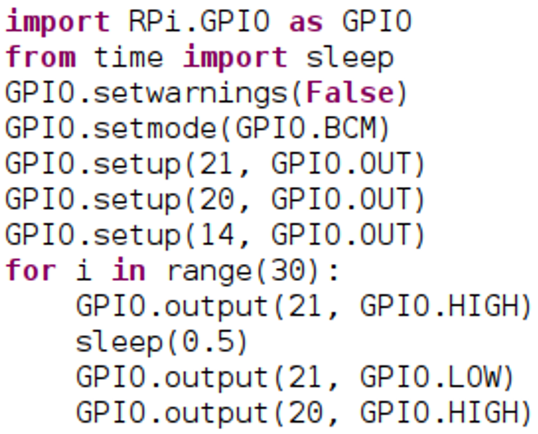
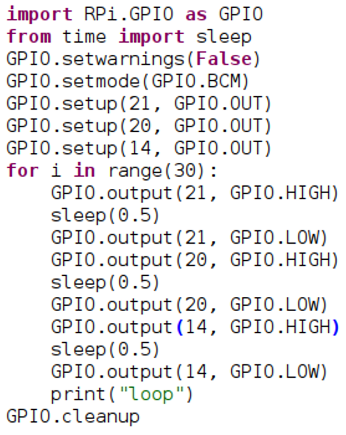
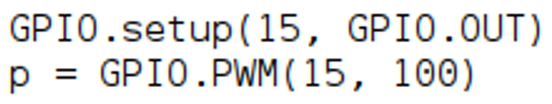

This first task will introduce the concept of the GPIO pins and the breadboard. No programming is needed for this first task just make sure you have properly set up the hardware needed.
This is what the breadboard will look like in the end:
There are four main tasks to do:
1. First, Connect the ground to the board, this is an important first step of any circuit. On the extension board, it is denoted as GND. There are multiple of these, any will do.
2. Then add the LED to the board so that the negative is connected to the ground
3. Next add the resister. This must connect the current row of pins used by the LED to a different row. Orientation doesn’t matter.
4. Lastly add the power using a wire from one of the 5 voltage pins (5VD) to the row with the resister that is not connected to the LED (positive side).
5. To add a switch is pretty easy. The concept is just to break and then connect the circuit to create a ‘switch’
6. Joining the two wires together will turn the light on and disconnecting them again will turn it off!
Expanding on what we learned in Project 1, This task will show you how to program the GPIO pins to a couple of simple components, namely the buzzer and the LEDs. This tutorial will explain how to get three different colored LEDs to flash in sequence, and eventually sync them to three different tones made by the buzzer. Tis will show how python programming can be used to control the external components through the use of the GPIO pins.
Fist, getting these LEDs to work
We will need to set up the components before we program what they should do.
So first, connect the ground to one of the rails, like in the previous project.
The pin layout is as follows
Connect the LEDs to the corresponding GPIO pin.
Remember the orientation of the LED and to use resistors!
Now to tell the components what to do.
1. You will need to open a new python file and import RPi.GPIO. This is a Python library that controls the GPIO pins. You will also need to import ‘sleep’ from the module ‘time’. Next, you will need to set the warnings to false and set the mode to BCM. This means we will refer to the GPIO pin rather than the pin number itself. Look here for clarification.
2. Next, set up the GPIO pins. This must be done so Python knows what context the pins are being used for. In this case, output. You will notice that each of these GPIO pins corresponds to the ones you plugged your components into earlier.
3. Now we are going to use a Python for loop to flash the lights. This saves us writing the same code many times. Instead we can loop over the same code multiple times, as many as we want. So, to start we will declare a for loop with a range. In the example, the range is 30, meaning it it’ll run the code in the loop 30 times.
4. Inside the for loop we want to make each light blink for half a second. We can do this by turning one light on, then using the sleep function to wait 0.5 seconds. We can eventually do this consecutively for each light. To turn the light on use the GPIO.output(x,y) command with parameters of ‘x’ being the GPIO pin you want to output and ‘y’ being what you want to output. It will look like this:
5. No that the light will turn on, we want to turn it off again. Using the same function, we just change GPIO.HIGH to GPIO.LOW. we can do this after using the sleep command that will keep the light on for 0.5 seconds.
You can run the code so far and see the light flash on and off
6. Now we just need to complete the last two steps another two times for the other two lights
7. For debugging purposes, feel free to add ‘print’ statements in your code. The example below will print “loop” to the console everytime it loops so that I know when it has looped, even if none of the lights are working. Therefore, if the lights don’t work, I know the code has run, but there is a problem.
8. Lastly you want to use the GPIO.cleanup function. This is very important to run at the end of any script. It sets the GPIO pins to their default values. For example: if you turned a LED on in a script and didn’t turn it off, it would stay on even when the script has completed. But by putting ‘GPIO.cleanup’ at the end of the script, it would turn the light off. Setting the pins to their default values is important for testing where each test needs to start at the same system state.
The final code will look like this:
Now we want to add some sound. Using python, we can alter the frequency of the buzzer to create different sounds for each light as it flashes. You will notice that in the current code, there is similar code repeated three times with different parameters. We can add a couple of different frequency changes for each light.
First, adding the components. you can see below that the buzzer has been added to the breadboard. In the example, the buzzer is connected to GPIO15. Like the LEDs, don’t forget a resistor!
Now to program it!
1. Like the LEDs we must declare the GPIO pin as an output. Unlike the LEDs though, we will be using pulse width modulation PWM to change the frequency of the buzzer. To declare this we must create a variable, the example below uses ‘p’, and point it to the PWM function which is GPIO.PWM(pin,frequency)
2. Now to add a couple of frequencies to the code. Using ‘p.start’ will now
3. Carry out step 2 for all three of the lights. Feel free to add a couple of frequency changes or more. In the example, there are four frequency changes: one when the first light turns on, then two for the second light and one for the third, as shown:
4. To wrap up we have to turn off the GPIO output to the buzzer using GPIO.LOW and also stop the GPIO.PWM with ‘p.stop’. this is because we earlier associated the function, with ‘p’.
Feel free to go on and change the sounds and flashings using what you have learnt. Add more frequency changes, patterns and sync them up with the flashing lights.
If you want to know what other things that the Raspberry Pi can do, check out Instructables for some project ideas.